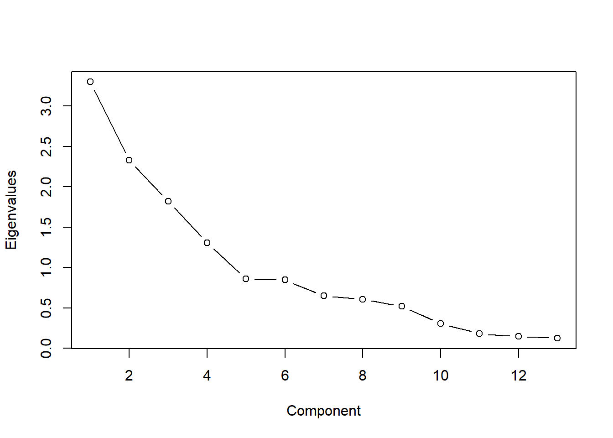
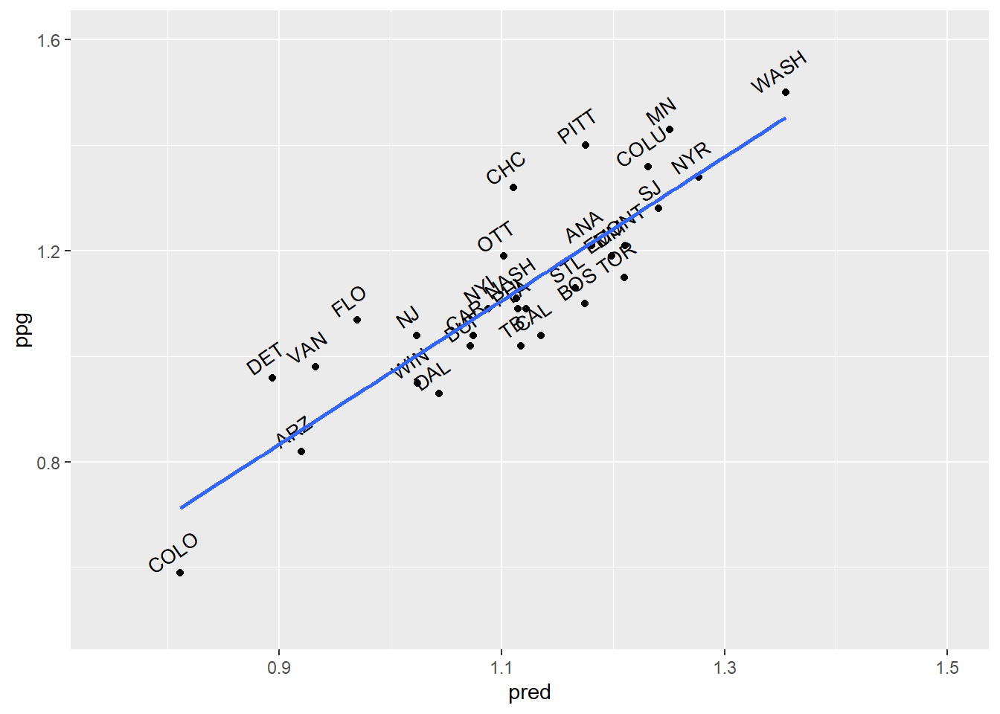

Principal Component Analysis
1 Introduction
Principal Component Analysis (PCA) is a statistical method first introduced by Hotelling in 1933. It is primarily used for dimensionality reduction and data transformation. The goal of PCA is to reduce the number of variables in a dataset while preserving as much information as possible. This is achieved by transforming the original variables into a smaller set of uncorrelated variables called principal components.
Applications of PCA:
- Feature Extraction: Simplifying datasets for machine learning tasks.
- Data Compression: Reducing storage space while retaining meaningful information.
- Exploratory Data Analysis: Understanding patterns and relationships in complex datasets.
1.1 Core Idea of PCA
Original Data Representation: Suppose there are \(p\) original variables denoted as \(X_1, X_2, ..., X_p\). These variables can be highly correlated, leading to redundancy in the dataset. PCA seeks to represent these variables in terms of new composite variables that capture the maximum variance in the data.
Transformation to Principal Components: PCA transforms the original variables into \(p\) new variables \(Y_1, Y_2, ..., Y_p\), called principal components. Each principal component is a linear combination of the original variables: \[ Y_1 = a_{11}X_1 + a_{12}X_2 + \dots + a_{1p}X_p \] \[ Y_2 = a_{21}X_1 + a_{22}X_2 + \dots + a_{2p}X_p \] \[ Y_p = a_{p1}X_1 + a_{p2}X_2 + \dots + a_{pp}X_p \] Here, the coefficients \(a_{ij}\) are chosen such that:
- The principal components \(Y_1, Y_2, ..., Y_p\) are uncorrelated.
- Each successive component captures the maximum possible variance in the data, subject to being orthogonal to the previous components.
Variance Maximization: The variance of each principal component is maximized, and the total variance of the data is preserved across all principal components. Mathematically, this means: \[ \text{Var}(Y_1) \geq \text{Var}(Y_2) \geq \dots \geq \text{Var}(Y_p) \] The first principal component \(Y_1\) captures the largest portion of the total variance in the dataset, followed by \(Y_2\), and so on.
Orthogonality: The principal components are mutually orthogonal, meaning there is no correlation between them: \[ \text{Cov}(Y_i, Y_j) = 0 \quad \text{for all } i \neq j \]
Key Steps in PCA:
Standardize the Data: The original data is often standardized (mean-centered and scaled to unit variance) to ensure that all variables contribute equally to the analysis, regardless of their original scale.
Compute the Covariance Matrix: Calculate the covariance matrix of the standardized data to understand the relationships and correlations between the variables.
Find Eigenvalues and Eigenvectors: Solve for the eigenvalues and eigenvectors of the covariance matrix. The eigenvalues represent the amount of variance captured by each principal component, and the eigenvectors determine the direction of the components.
Form the Principal Components: Multiply the original data by the eigenvectors to project it onto the new axes, forming the principal components.
Benefits of PCA:
Dimensionality Reduction:
PCA reduces the number of variables while retaining most of the important information in the dataset.
Elimination of Multicollinearity: The transformed variables (principal components) are uncorrelated, addressing issues caused by multicollinearity.
Data Visualization: By reducing data to 2 or 3 dimensions, PCA enables easier visualization of high-dimensional datasets.
1.2 Five Basic Properties of Principal Components
Summary of Importance:
- Property 1 confirms that PCA preserves the overall variance of the dataset.
- Property 2 highlights the relative contribution of each principal component to the total variance, enabling dimensionality reduction.
- Property 3 explains how the components relate to the original variables, aiding interpretability.
- Property 4 reinforces the link between eigenvalues and the variance captured by each component.
- Property 5 guarantees that the principal components are independent, eliminating multicollinearity.
Principal Component Analysis (PCA) transforms a set of correlated variables into a smaller set of uncorrelated variables called principal components, ranked by the variance they capture. Here are the five fundamental properties of principal components in detail:
Property 1: Total Variance is Preserved
- The total variance of the original variables is equal to the sum of
the variances of all the principal components: \[
\sum_{i=1}^p \text{Var}(X_i) = \sum_{i=1}^p \lambda_i
\] Here:
- \(\lambda_1, \lambda_2, \dots, \lambda_p\) are the eigenvalues of the covariance matrix of the original variables.
- The eigenvalues represent the variances of the corresponding principal components.
This property ensures that PCA does not lose information regarding the total variability of the dataset, even as it transforms the data into a new coordinate system.
Property 2: Proportional Variance Contribution
- Each principal component contributes a proportion of the total variance. The proportion of variance explained by the \(k\)-th principal component is: \[ \frac{\lambda_k}{\sum_{i=1}^p \lambda_i} \]
- The cumulative contribution of the first \(k\) principal components is: \[ \frac{\sum_{i=1}^k \lambda_i}{\sum_{i=1}^p \lambda_i} \]
This property helps identify how much of the total variance is captured by the first few principal components, aiding in dimensionality reduction. Often, a small number of components explain most of the variability.
Property 3: Correlation Between Principal Components and Original Variables
- The correlation between the \(k\)-th principal component (\(Y_k\)) and the original variable (\(X_i\)) is given by: \[
\rho(Y_k, X_i) = \frac{\mu_{ik}}{\sqrt{\lambda_k \sigma_{ii}}}
\] Here:
- \(\mu_{ik}\) is the \(i\)-th element of the eigenvector associated with the \(k\)-th principal component.
- \(\sigma_{ii}\) is the variance of the \(i\)-th original variable.
This property shows how strongly each principal component is associated with the original variables, providing insight into the interpretation of the components.
Property 4: Variance of Each Principal Component
- The variance of the \(k\)-th principal component is equal to its corresponding eigenvalue: \[ \text{Var}(Y_k) = \lambda_k \] This property directly links the eigenvalues of the covariance matrix with the variability captured by each principal component.
Property 5: Orthogonality of Principal Components
- Principal components are uncorrelated, which means their pairwise covariance is zero: \[ \text{Cov}(Y_i, Y_j) = 0 \quad \text{for } i \neq j \]
This property ensures that each principal component represents unique information, free from redundancy present in the original correlated variables.
1.3 Algorithm: Detailed Explanation
Principal Component Analysis (PCA) is a dimensionality reduction technique that identifies the most significant patterns or directions in a dataset. The goal of PCA is to reduce the number of dimensions in the dataset (from \(n\) to \(n'\)) while retaining as much of the original data’s variability as possible. Although some information loss is inevitable, PCA minimizes this loss to ensure that the reduced-dimensional data represents the original dataset effectively.
Input and Output
- Input:
- \(n\)-dimensional dataset \(D = \{x^{(1)}, x^{(2)}, \dots, x^{(m)}\}\), where \(m\) is the number of data points and each data point \(x^{(i)}\) is in \(\mathbb{R}^n\).
- The target number of dimensions, \(n'\), such that \(n' < n\).
- Output:
- The transformed dataset \(D' = \{z^{(1)}, z^{(2)}, \dots, z^{(m)}\}\), where each \(z^{(i)}\) is in \(\mathbb{R}^{n'}\).
PCA Algorithm Steps
Step 1: Center the Data
- Centering the data ensures that the dataset has zero mean along each dimension.
- For each data point \(x^{(i)}\), subtract the mean of all data points: \[ x^{(i)} = x^{(i)} - \frac{1}{m} \sum_{j=1}^m x^{(j)} \]
- After this step, the mean of the dataset along each dimension is zero.
Step 2: Compute the Covariance Matrix
- The covariance matrix captures the relationships between different dimensions of the dataset. It is defined as: \[ C = \frac{1}{m} X X^T \] where \(X\) is the \(n \times m\) matrix of centered data points, and \(C\) is an \(n \times n\) symmetric matrix.
Step 3: Perform Eigenvalue Decomposition
- Perform eigenvalue decomposition on the covariance matrix \(C = X X^T\) to obtain:
- The eigenvalues (\(\lambda_1, \lambda_2, \dots, \lambda_n\)), which indicate the amount of variance captured by each principal component.
- The eigenvectors (\(w_1, w_2, \dots, w_n\)), which are the directions of the principal components.
Step 4: Select the Top \(n'\) Principal Components
- Sort the eigenvalues in descending order (\(\lambda_1 \geq \lambda_2 \geq \dots \geq \lambda_n\)).
- Select the top \(n'\) eigenvalues and their corresponding eigenvectors (\(w_1, w_2, \dots, w_{n'}\)).
- Normalize these eigenvectors and form the feature vector matrix \(W\), where: \[ W = [w_1 \, w_2 \, \dots \, w_{n'}] \] \(W\) is an \(n \times n'\) matrix that projects the data into the reduced \(n'\)-dimensional space.
Step 5: Transform the Original Dataset
- For each data point \(x^{(i)}\), compute the new representation \(z^{(i)}\) in the reduced \(n'\)-dimensional space: \[ z^{(i)} = W^T x^{(i)} \]
- Here, \(W^T\) is the transpose of the matrix \(W\), and \(z^{(i)}\) is the \(n'\)-dimensional representation of the data point \(x^{(i)}\).
Step 6: Output the Transformed Dataset
- The transformed dataset is: \[ D' = \{z^{(1)}, z^{(2)}, \dots, z^{(m)}\} \] where each \(z^{(i)}\) is a data point in the reduced \(n'\)-dimensional space.
1.4 Partial Least Squares (PLS)
Partial Least Squares (PLS) is a regression and dimensionality reduction technique designed to address challenges such as multicollinearity and situations where the number of predictors exceeds the number of observations. Unlike Principal Component Analysis (PCA), which focuses solely on the predictors (\(X\)), PLS incorporates the response variable (\(Y\)) into the dimensionality reduction process, making it particularly effective for predictive tasks.
PLS works by decomposing both \(X\) and \(Y\) into latent variables, which are linear combinations of the original variables. These latent variables are chosen to maximize the covariance between \(X\) and \(Y\), ensuring that the reduced representation of \(X\) is most relevant for predicting \(Y\).
The algorithm can be summarized as follows:
- \(X\) is decomposed into \(T\), a set of latent variables (or scores), and \(P\), the corresponding loadings, along with a residual matrix \(E\): \[ X = T P^T + E \]
- \(Y\) is decomposed into \(U\), the latent variables for \(Y\), and \(Q\), the loadings, with residuals \(F\): \[ Y = U Q^T + F \]
- The latent variables \(T\) and \(U\) are computed such that their covariance is maximized. Regression is then performed using \(T\) as the predictor for \(Y\): \[ Y = T B + F \]
PCA, on the other hand, transforms \(X\) into a set of uncorrelated components by maximizing the variance in \(X\) alone, without considering \(Y\). The components in PCA are orthogonal and represent directions of maximum variability in \(X\). The primary goal of PCA is to reduce the dimensionality of \(X\) while retaining as much information as possible about the original data structure.
The key difference between PCA and PLS lies in their objectives. PCA focuses solely on \(X\), identifying components that explain the most variance, and is therefore unsupervised. In contrast, PLS is a supervised method, as it incorporates \(Y\) into the dimensionality reduction process, ensuring that the extracted components are not only informative about \(X\) but also predictive of \(Y\).
PLS and PCA share a close mathematical relationship. In fact, PLS can be thought of as an extension of PCA that aligns the component selection with the prediction of \(Y\). The first step of PLS often involves a PCA-like transformation of \(X\), but PLS proceeds to optimize the components based on their relevance to \(Y\).
Summary of Assumptions for Different Regression Methods
| Regression Methods | Assumptions |
|---|---|
| Ordinary Least Squares (OLS), Ridge Regression, Variable Selection | - Predictors must be independent. - The values of predictors must be precise. - Residuals must be random. |
| Principal Component Regression (PCR), Partial Least Squares (PLS) | - Predictors can be correlated. - Predictors can have measurement errors. - Residuals can have some structure. |
1.5 Principal Component Rotation
Principal Component Rotation is a technique used in factor analysis or Principal Component Analysis (PCA) to make the interpretation of the components easier and more meaningful. Rotation reorients the axes of the principal components without altering their explanatory power, aiming to simplify the factor structure and make it easier to link components to specific variables.
Why is Rotation Needed?
The components obtained from PCA or factor analysis often involve a mix of many variables contributing to each component. This complexity makes it challenging to interpret the components. Rotation helps simplify this by redistributing the variance among the components, aiming for a clearer pattern of high and low loadings (the coefficients showing the relationship between variables and components).
Comparison of Varimax and Promax
| Feature | Varimax (Orthogonal) | Promax (Oblique) |
|---|---|---|
| Component Correlation | Components remain uncorrelated (independent). | Components are allowed to be correlated. |
| Interpretability | Simple structure with clear distinction between variables and components. | Similar simple structure but with more flexibility. |
| Use Cases | When independence of components is important (e.g., engineering data). | When factors are expected to be interrelated (e.g., social sciences). |
| Complexity | Relatively simple to compute and interpret. | Slightly more complex, as it provides correlations among components. |
1. Orthogonal Rotation (e.g., Varimax)
Definition: Orthogonal rotation maintains the independence (non-correlation) of the components while redistributing the loadings for better interpretability.
Method: The most popular orthogonal rotation method is Varimax Rotation. It attempts to maximize the variance of squared loadings in each column of the loading matrix, aiming to “sharpen” the components.
Objective:
- Simplify the factor structure such that each component is primarily associated with a small subset of variables.
- This means that each column of the loading matrix will have a few high loadings (strongly related variables) and many near-zero loadings (weakly related or unrelated variables).
Advantages:
- Components remain uncorrelated, preserving their independence.
- Interpretation is straightforward since variables are distinctly associated with specific components.
Example: After Varimax rotation, a specific principal component might strongly relate to only two or three variables, making it easier to interpret what that component represents.
2. Oblique Rotation (e.g., Promax)
Definition: Oblique rotation allows the components to become correlated. This type of rotation is useful when the underlying factors are expected to be related, which is common in social sciences or behavioral data.
Method: A popular oblique rotation method is Promax Rotation. It adjusts the axes to allow some degree of correlation among the components while still simplifying the factor structure.
Objective:
- Similar to Varimax, it simplifies the structure by maximizing variance. However, it allows for correlations between components, which might better reflect real-world relationships among latent factors.
Advantages:
- More flexible and realistic for many datasets where underlying factors are likely to be interrelated.
- Provides both the rotated loadings and the correlations between components, offering a richer view of the data.
Example: If two components are related to overlapping sets of variables, Promax rotation might show them as correlated components, making the relationships more realistic.
2 Application
2.1 Data preparation
## tidyverse knitr
## TRUE TRUE2.2 Modeling
对于模型构建过程，我们按照以下几个步骤进行:
抽取主成分并决定保留的数量;
- 通过psych包抽取主成分要使用principal()函数，语法中要包括数据和是否要进行主成分旋转
- pca <- principal(train.scale, rotate=“none”)
- 碎石图可以帮助你评估能解释大部分数据方差的主成分, 需要在碎石图中找出使变化率降低的那个点， 也就是我们常说的统计图中的“肘点”或弯曲点。
- 肘点表示在这个点上新增加一个主成分时，对方差的解释增加得并不太多。换句话说，这个点就是曲线由陡变平的转折点
对留下的主成分进行旋转;
- 旋转背后的意义是使变量在某个主成分上的载荷最大化
- 可以减少(或消灭)主成分之间的相关性，有助于对主成分的解释。
- 进行正交旋转的方法称为“方差最大法”。还有其他非正交旋转方法，这种方法允许主成分(因子)之间存在相关性
对旋转后的解决方案进行解释; 生成各个因子的得分; 使用得分作为输入变量进行回归分析
使用测试数据评价模型效果。

## Principal Components Analysis
## Call: principal(r = train.scale, nfactors = 5, rotate = "varimax")
## Standardized loadings (pattern matrix) based upon correlation matrix
## RC1 RC2 RC5 RC3 RC4 h2 u2 com
## Goals_For -0.21 0.82 0.21 0.05 -0.11 0.78 0.22 1.3
## Goals_Against 0.88 -0.02 -0.05 0.21 0.00 0.82 0.18 1.1
## Shots_For -0.22 0.43 0.76 -0.02 -0.10 0.81 0.19 1.8
## Shots_Against 0.73 -0.02 -0.20 -0.29 0.20 0.70 0.30 1.7
## PP_perc -0.73 0.46 -0.04 -0.15 0.04 0.77 0.23 1.8
## PK_perc -0.73 -0.21 0.22 -0.03 0.10 0.64 0.36 1.4
## CF60_pp -0.20 0.12 0.71 0.24 0.29 0.69 0.31 1.9
## CA60_sh 0.35 0.66 -0.25 -0.48 -0.03 0.85 0.15 2.8
## OZFOperc_pp -0.02 -0.18 0.70 -0.01 0.11 0.53 0.47 1.2
## Give -0.02 0.58 0.17 0.52 0.10 0.65 0.35 2.2
## Take 0.16 0.02 0.01 0.90 -0.05 0.83 0.17 1.1
## hits -0.02 -0.01 0.27 -0.06 0.87 0.83 0.17 1.2
## blks 0.19 0.63 -0.18 0.14 0.47 0.70 0.30 2.4
##
## RC1 RC2 RC5 RC3 RC4
## SS loadings 2.69 2.33 1.89 1.55 1.16
## Proportion Var 0.21 0.18 0.15 0.12 0.09
## Cumulative Var 0.21 0.39 0.53 0.65 0.74
## Proportion Explained 0.28 0.24 0.20 0.16 0.12
## Cumulative Proportion 0.28 0.52 0.72 0.88 1.00
##
## Mean item complexity = 1.7
## Test of the hypothesis that 5 components are sufficient.
##
## The root mean square of the residuals (RMSR) is 0.08
## with the empirical chi square 28.59 with prob < 0.19
##
## Fit based upon off diagonal values = 0.91##
## Call:
## lm(formula = ppg ~ ., data = pca.scores)
##
## Residuals:
## Min 1Q Median 3Q Max
## -0.163274 -0.048189 0.003718 0.038723 0.165905
##
## Coefficients:
## Estimate Std. Error t value Pr(>|t|)
## (Intercept) 1.111333 0.015752 70.551 < 2e-16 ***
## RC1 -0.112201 0.016022 -7.003 3.06e-07 ***
## RC2 0.070991 0.016022 4.431 0.000177 ***
## RC5 0.022945 0.016022 1.432 0.164996
## RC3 -0.017782 0.016022 -1.110 0.278044
## RC4 -0.005314 0.016022 -0.332 0.743003
## ---
## Signif. codes: 0 '***' 0.001 '**' 0.01 '*' 0.05 '.' 0.1 ' ' 1
##
## Residual standard error: 0.08628 on 24 degrees of freedom
## Multiple R-squared: 0.7502, Adjusted R-squared: 0.6981
## F-statistic: 14.41 on 5 and 24 DF, p-value: 1.446e-06##
## Call:
## lm(formula = ppg ~ RC1 + RC2, data = pca.scores)
##
## Residuals:
## Min 1Q Median 3Q Max
## -0.18914 -0.04430 0.01438 0.05645 0.16469
##
## Coefficients:
## Estimate Std. Error t value Pr(>|t|)
## (Intercept) 1.11133 0.01587 70.043 < 2e-16 ***
## RC1 -0.11220 0.01614 -6.953 1.8e-07 ***
## RC2 0.07099 0.01614 4.399 0.000153 ***
## ---
## Signif. codes: 0 '***' 0.001 '**' 0.01 '*' 0.05 '.' 0.1 ' ' 1
##
## Residual standard error: 0.0869 on 27 degrees of freedom
## Multiple R-squared: 0.7149, Adjusted R-squared: 0.6937
## F-statistic: 33.85 on 2 and 27 DF, p-value: 4.397e-08## [1] 0.08244449## [1] 0.08244449
## [1] 0.10115613 Kernelized Principal Component Analysis (KPCA)
3.1 Introduction
Kernelized Principal Component Analysis (KPCA) is an extension of Principal Component Analysis (PCA) designed to handle non-linear data. While traditional PCA works well for data that can be linearly separated, it struggles with non-linear datasets. KPCA addresses this limitation by applying the kernel trick, a method also used in support vector machines (SVMs), to map data into a higher-dimensional space where it becomes linearly separable, and then performing dimensionality reduction in that space.
Key Idea
In PCA, the assumption is that the data lies on or near a linear subspace, and the goal is to project the data onto a lower-dimensional linear subspace. However, for data that is non-linearly distributed, this assumption does not hold. KPCA solves this problem by:
- Mapping the data from the original \(n\)-dimensional space to a much higher-dimensional space (e.g., \(N > n\)) using a non-linear mapping function \(\phi\): \[ x^{(i)} \rightarrow \phi(x^{(i)}) \]
- Performing PCA in this high-dimensional space.
- Reducing the data back to a lower-dimensional space \(n'\), where \(n' < n < N\).
This approach makes it possible to capture non-linear structures in the data while retaining the benefits of PCA for dimensionality reduction.
3.2 Mathematical Framework
- PCA in Original Space
In traditional PCA, the eigenvalue problem is defined for the covariance matrix of the dataset: \[ \sum_{i=1}^m x^{(i)} x^{(i)T} W = \lambda W \] Here:- \(x^{(i)}\) represents the \(i\)-th data point.
- \(W\) is the eigenvector (principal component).
- \(\lambda\) is the eigenvalue (explaining the variance along the eigenvector).
- Mapping to High-Dimensional Space
KPCA replaces \(x^{(i)}\) with \(\phi(x^{(i)})\), mapping the data into a high-dimensional feature space where it is linearly separable. The eigenvalue equation becomes: \[ \sum_{i=1}^m \phi(x^{(i)}) \phi(x^{(i)})^T W = \lambda W \] Here:- \(\phi(x^{(i)})\) is the mapped representation of the \(i\)-th data point in the high-dimensional space.
- Kernel Trick
In practice, computing \(\phi(x^{(i)})\) explicitly in a high-dimensional space is computationally expensive or even infeasible. Instead, KPCA uses the kernel trick, where the dot product \(\phi(x^{(i)}) \cdot \phi(x^{(j)})\) is computed indirectly using a kernel function \(K(x^{(i)}, x^{(j)})\): \[ K(x^{(i)}, x^{(j)}) = \phi(x^{(i)})^T \phi(x^{(j)}) \] Popular kernel functions include:- Linear Kernel: \(K(x, y) = x^T y\) (equivalent to standard PCA).
- Polynomial Kernel: \(K(x, y) = (x^T y + c)^d\).
- Gaussian (RBF) Kernel: \(K(x, y) = \exp(-\|x-y\|^2 / 2\sigma^2)\).
- Eigenvalue Decomposition in Kernel Space
Using the kernel function, the covariance matrix in the high-dimensional space is represented by the Gram matrix \(K\): \[ K_{ij} = \phi(x^{(i)})^T \phi(x^{(j)}) \] The eigenvalue problem in the kernel space becomes: \[ K \alpha = \lambda \alpha \] Here:- \(\alpha\) are the eigenvectors of the Gram matrix.
- \(\lambda\) are the eigenvalues.
- Dimensionality Reduction
The data in the high-dimensional space is projected onto the top \(n'\) eigenvectors, corresponding to the largest \(n'\) eigenvalues. The transformed data points in the lower-dimensional space are computed as: \[ z^{(i)} = \sum_{j=1}^m \alpha_j K(x^{(i)}, x^{(j)}) \] This provides the reduced representation of the data while preserving non-linear relationships.
3.3 Comparison with PCA
| Aspect | PCA | KPCA |
|---|---|---|
| Assumption | Data is linearly distributed or approximately so. | Data may be non-linear; kernel mapping addresses this. |
| Computation | Eigenvalue decomposition on covariance matrix. | Eigenvalue decomposition on kernel (Gram) matrix. |
| Mapping | Works in original space. | Maps data to high-dimensional space using kernel functions. |
| Flexibility | Limited to linear subspaces. | Captures non-linear patterns. |
Applications of KPCA
- Non-Linear Dimensionality Reduction:
- KPCA is ideal for data that lies on a non-linear manifold, such as data with curved or complex structures.
- Pattern Recognition:
- Commonly used in image processing, facial recognition, and handwriting analysis, where patterns are inherently non-linear.
- Data Preprocessing:
- KPCA is often used as a preprocessing step for machine learning models to reduce dimensionality while preserving complex relationships in the data.
- Anomaly Detection:
- In high-dimensional feature spaces, KPCA can identify non-linear anomalies that are not easily captured by linear models.
Advantages of KPCA
- Handles non-linear relationships in the data effectively.
- Uses the kernel trick to avoid explicitly computing high-dimensional transformations, making it computationally feasible.
- Extends the applicability of PCA to more complex datasets.
Disadvantages of KPCA
- Selecting the appropriate kernel function and its parameters (e.g., \(\sigma\) in RBF kernel) can be challenging and problem-specific.
- Computational complexity increases with the size of the dataset due to the need to compute the Gram matrix.